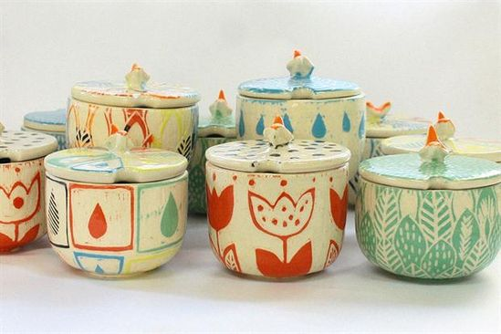
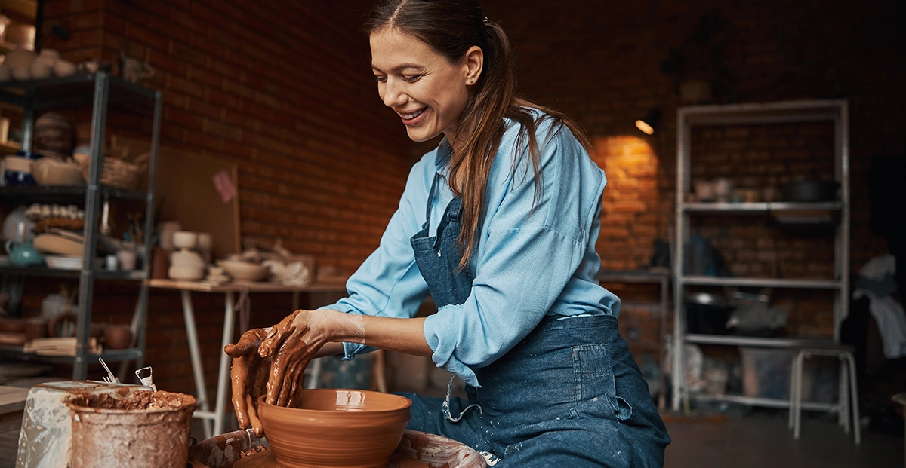

NUESTRO TALLER PARA PRINCIPIANTES Y MAS EXPERIMENTADOS
Aprende técnicas de modelado y esmaltado para crear piezas decorativas. Trabajar con barro puede ser una nueva forma de meditación, sobre todo si lo haces con el cuidado y la pasión de Paula Casella, licenciada en Bellas Artes y fundadora de Bambucito Cerámica Orgánica, quien te enseñará, con sus 15 años de experiencia en este arte manual, todo lo que necesitas saber para iniciarte en la cerámica. En este curso aprenderás desde cero a modelar y esmaltar la cerámica en casa, creando piezas con barro sin cocción y, también, otras de barro con cocción para las que necesitarás el alquiler de un horno. Para ello, conocerás en profundidad la diferencia entre el barro con horno y el de secado al aire, además de cómo hacer moldes de yeso que te servirán como base para infinidad de piezas que podrás crear por tu cuenta. Este curso es complementario a Esmaltado en cerámica para principiantes en el que Paula, te enseñará las bases para decorar y esmaltar tus piezas cerámic
¿Cuál es el proyecto del curso?
Realizarás cuatro sets con forma de seta. Los tres primeros aplicando las tres técnicas básicas del modelado del barro y tres técnicas de esmaltado, dando como resultado vajillas para diferentes usos (desayuno, alhajero, etc.). El cuarto set será de tejido y aplicarás la técnica de las planchas, pero agregando texturas, y una técnica diferente de esmaltado.
Requisitos y materiales
Para realizar este curso no necesitarás conocimientos previos, solo muchas ganas de descubrir el proceso creativo de la cerámica. Sobre los materiales, necesitarás un kit básico de iniciación a la cerámica (estecas, esponja, cortador) que puedes conseguir en cualquier bazar, y también arcilla, rodillo, telas viejas, yeso en polvo, esmaltes, y pinturas acrílicas. Debes tener en cuenta que para completar algunas prácticas del curso, necesitarás tener acceso a un horno de artesanos o talleres de cerámica, que en la actualidad alquilan sin complicaciones